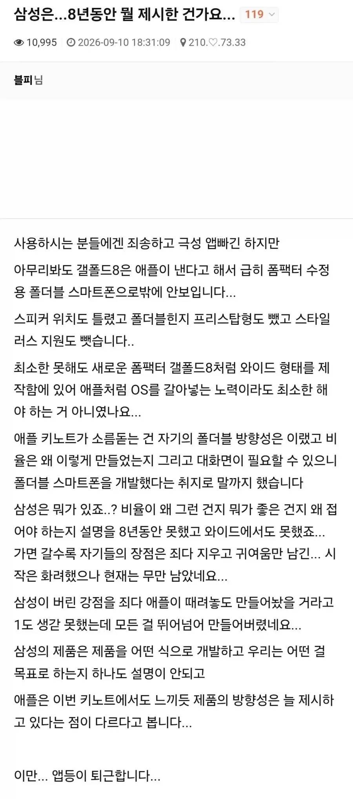
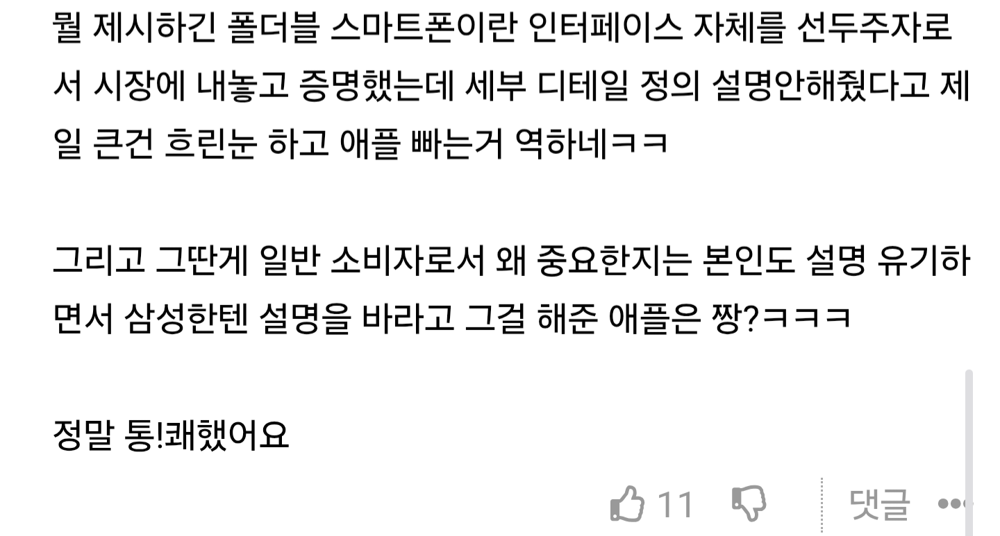
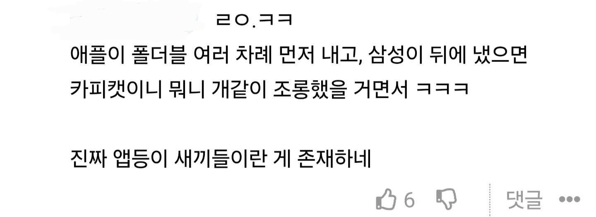
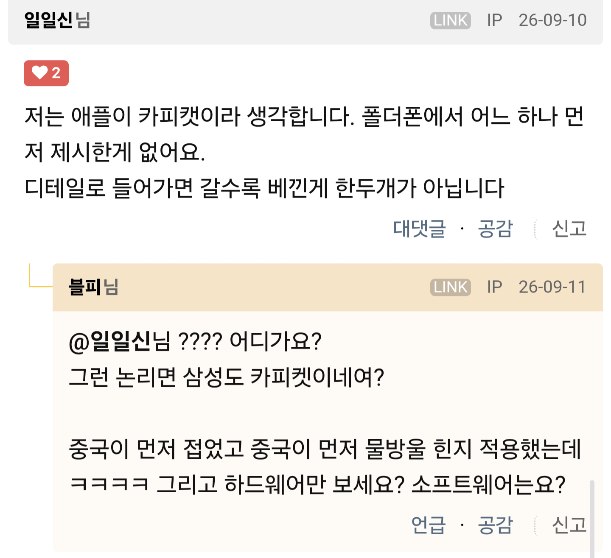
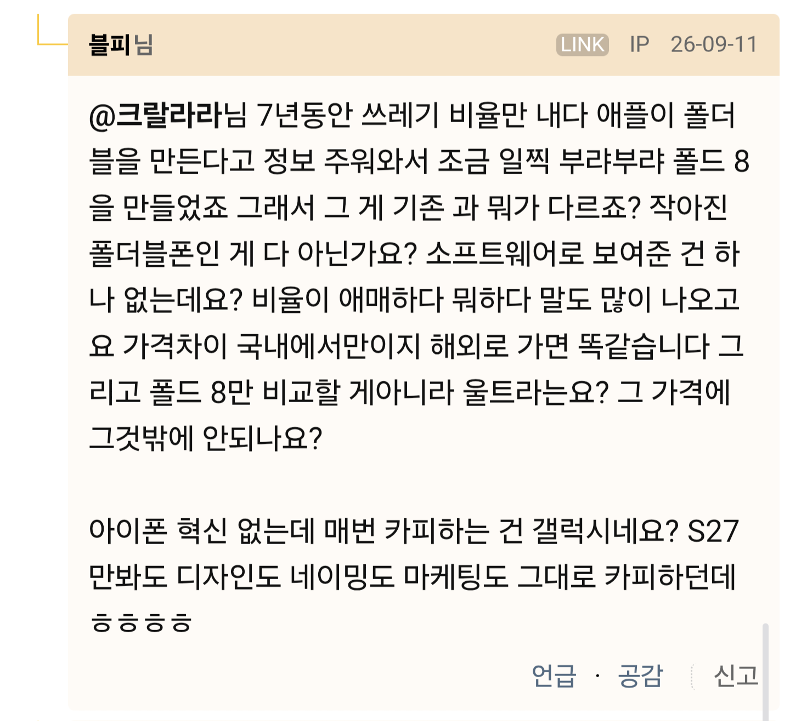
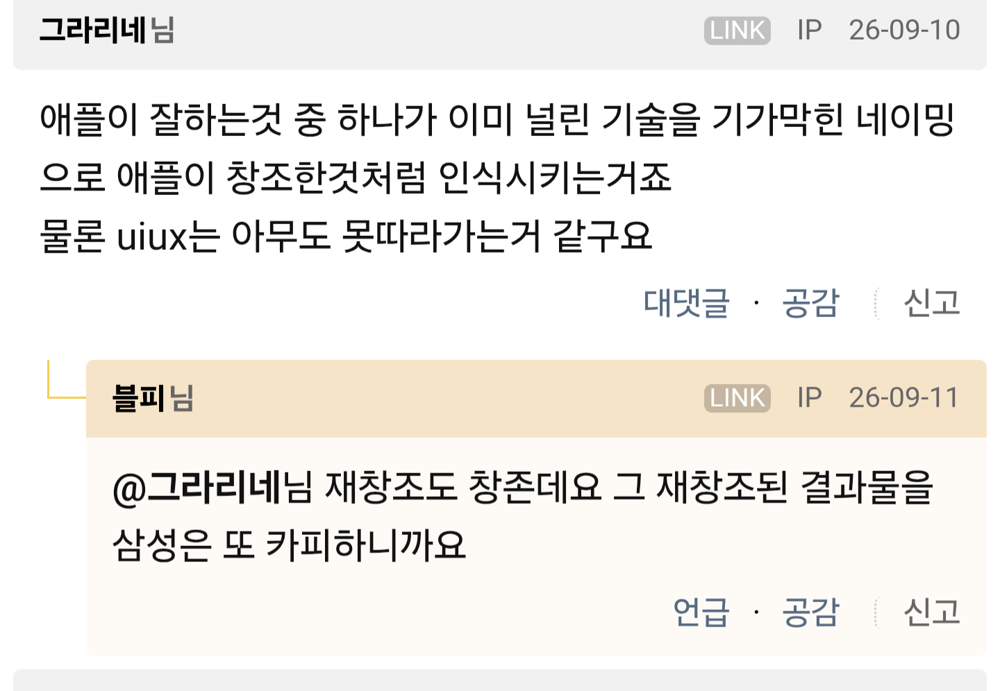

원글
이글에 개드립 댓 반응


정말 그럴까?



진짜로 그렇다
생각하는 보법부터 남다르다
끄덕끄덕...

원글
이글에 개드립 댓 반응


정말 그럴까?



진짜로 그렇다
생각하는 보법부터 남다르다
끄덕끄덕...
여기도 앱등이들 ㅈㄴ 많아. 지금 그냥 아닌척 흐린눈 하는거지
이번에 듀오 내기전까지 삼성에서 폴드 시리즈 낼때마다 나온 댓글이 "대체 왜 접고 펼쳐야함?" "주변에 보면 폴드 펼쳐서 쓰는 사람 1도 없던데?" 이딴소리하던 앱등이들 개드립에도 ㅈㄴ 많았는데 애플에서 폴더블 내놓으니까 그런 얘기 1도 안함
그렇다고 듀오가 접고 펼쳐야하는 이유를 새롭고 명확하게 제시를 하길 했나? 329만원부터 시작하는 대가리 총맞은 가격도 흐린눈하고, 삼성이 폴드2때부터 했던 플렉스모드(90도 접었을때 전용 UI, UX모드)도 듀오에서 반쯤 접어놓고 유사하게 보여주던데 이런 부분도 앱등이새끼들 입 싹닫고 그저 삼성도 중국 따라했는데? 이러면서 물타기.
그냥 애플도 폴더블내면서 서로 좋은거 카피하고 경쟁하고 이러면 사용자인 우리 입장에선 더 좋은 신기술 써보고 좋은건데 그저 인생 최대업적이 애플제품 구매인 앱등이들은 중국카피 운운하면서 자기네는 무조건 최초래 ㅉㅉ
하나도 새로울거 없고
열때 애니메이션 하나 좋던데
그냥 좀써라 기술이어떻고 소프트웨어가 어떻고 주식 물린건가?
나도 삼성폰만 쓰지만
솔직히 디자인은 존나 배끼잖아
ui부터 하드웨어 배치까지
아이폰 인덕션 존나 욕먹었는데 이제 다음 갤럭시는 인덕션 들간다며 ㅋㅋ
다음 폴드는 화면비율 백퍼센트 배낄거임
이게 배낀게 아니면 뭐임?
그냥 인정할거는 인정해야지
앱등 느낌을 난몰라서 애플주식을 못사겠어